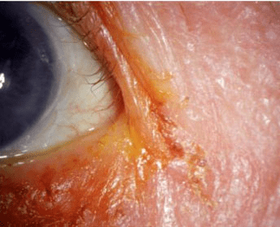

What is Blepharitis?
Blepharitis is inflammation of the eyelids. When it involves the outside front
of the eyelid, where the eyelashes are attached, it is called anterior blepharitis.
Anterior blepharitis may be caused by:
- Bacteria
- Scalp dandruff (seborrheic dermatitis)
- Allergy
- Psoriasis
If blepharitis involves the inner eyelid, it is called posterior blepharitis.
Posterior blepharitis may be caused by:
- Dysfunction of the oil (meibomian) glands in the eyelid
- Acne rosacea
- Scalp dandruff (seborrheic dermatitis)
- Allergy

Although blepharitis is very common, people who have scalp dandruff (seborrheic dermatitis),
dry skin, acne rosacea, contact allergies, diabetes, poor hygiene, or those sensitive
to chemical irritants or cosmetic makeup are much more likely to suffer from blepharitis.
Blepharitis is not contagious.
Typically, the eyelids are reddened ("red rims" as it is often called), swollen, and slightly warm,
often with crusty debris (in the lashes, in the corner of the eyes, or on the lid edges).
Burning, tearing, sensitivity to light, the feeling of a foreign body in the eye(s),
sticking together of the lids, watery or mucous discharge, pain, blurry vision,
and eye redness may all occur with blepharitis. Eye lashes may fall out or become
twisted and possibly irritate the eye. Blepharitis may affect only one eye, but,
usually, both eyes are involved.
- Apply frequent warm, moist compresses.
- Clean the eyelids with baby shampoo and a wet cotton ball.
- Practice good hygiene of the face and scalp, including use of antidandruff shampoo, if needed.
- Make sure all makeup is removed daily.
- Avoid any irritants that might cause blepharitis.
- Keep underlying conditions controlled (eg, diabetes and acne rosacea).
- Pain is increasing.
- Vision is worsening.
- Swelling is increasing.
- The eyelids become hot to the touch.
- The condition is not getting better within a week despite self-care.
- There is blistering and/or rash on the eyelids.
- There is development of a lesion (bump or growth) on the eyelid that does
not respond to the warm compresses.
Your family doctor, an internist, or an eye doctor can diagnose eyelid inflammation.
In some cases, a physical examination of your eye is enough to diagnose the condition.
Your doctor can also closely examine your eyelids using a specialized magnifying tool.
This eye examination checks your eyes for inflammation as well as the presence of bacteria,
fungi, or viruses, which can indicate an infection.
If there are symptoms of an infection, your doctor will swab your eye and take a sample
of any fluid seeping from your eyes. This sample is then examined under a microscope.
There are two types of eyelid inflammation:
- Anterior eye inflammationoccurs on the outside of your eye where your eyelashes
are located. Dandruff on your eyebrows and allergic reactions in your eyes can cause
anterior eyelid inflammation.
- Posterior eyelid inflammationoccurs on the inner edge of eyelids closest to
your eye. A malfunctioning oil gland behind your eyelash follicles usually
causes this form of inflammation.
Washing your eyes and applying a warm compress can reduce inflammation. Depending
on the severity of inflammation and whether your inflammation is caused by an
infection, your doctor may recommend other treatments.
Steroid treatment
If you don’t have an infection, your doctor may prescribe steroids, eye drops, or
ointment to reduce inflammation. Your doctor may also prescribe lubricating eye
drops to stop irritation caused by dry eyes.
Antibiotics
A course of antibiotics may effectively treat eyelid infections. Your doctor can
prescribe antibiotic medication in pill, ointment, or liquid drop form. Doctors
often prescribe drops when an infection spreads beyond the eyelid.
Eyelash loss is a potential complication of eyelid inflammation. This is caused
by scarring in the hair follicles, which can make your lashes grow incorrectly.
Extensive scarring can also prevent eyelash growth.
Common short-term complications of eyelid inflammation include dry eyes and pink eye.
Long-term complications may include:
- scarring on the eyelid
- a stye (an infected lump that appears on the base of your eyelashes)
- chronic pink eye
The oil glands on your eyelids can also become infected and blocked. This can cause
an infection under your eyelids. An untreated eye infection can cause permanent eye
damage and vision loss. Scarring under the eyelids can scratch the eye’s delicate
surface. It can also cause ulcers on your cornea, which is the clear, protective
outer layer of your eye.
Eyelid inflammation can be uncomfortable, painful, and unsightly. Unfortunately,
this condition isn’t always preventable, but you can take measures to reduce
your risk of inflammation.
Make sure you wash your face regularly. This includes removing your eye and facial
makeup before going to bed. Don’t touch your eyes with dirty hands and don’t rub
itchy eyelids. Rubbing your eyes can spread an existing infection. Also, have your
eyelids checked if you notice pain, redness, or swelling. Controlling dandruff
also helps reduce inflammation. If you have severe dandruff, talk with your doctor.
You may need a prescription shampoo.